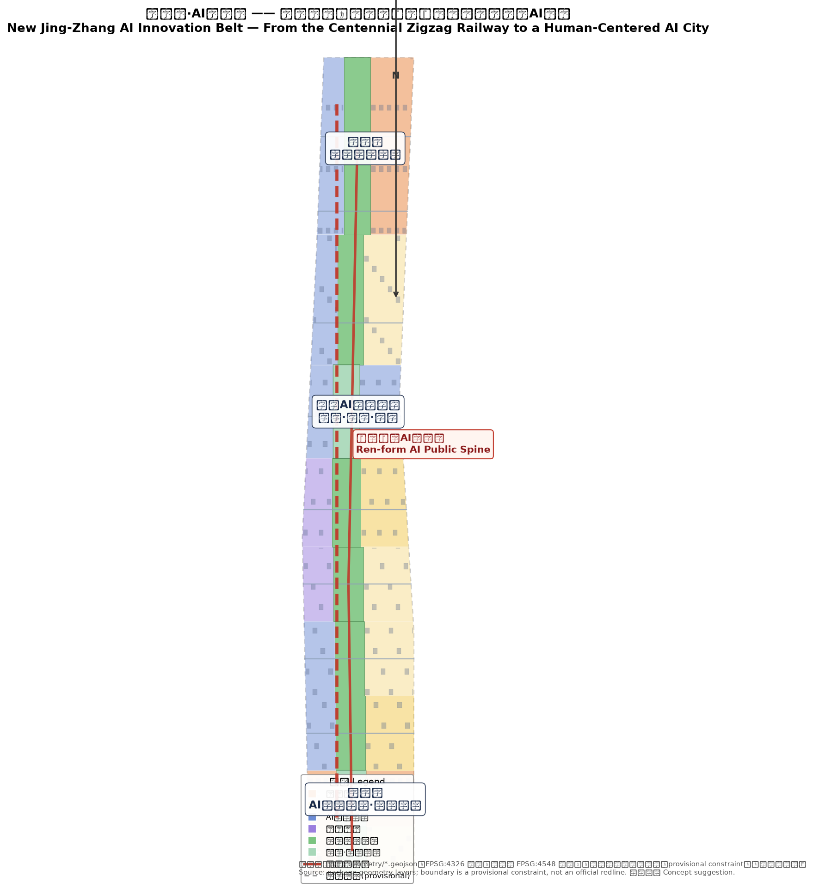
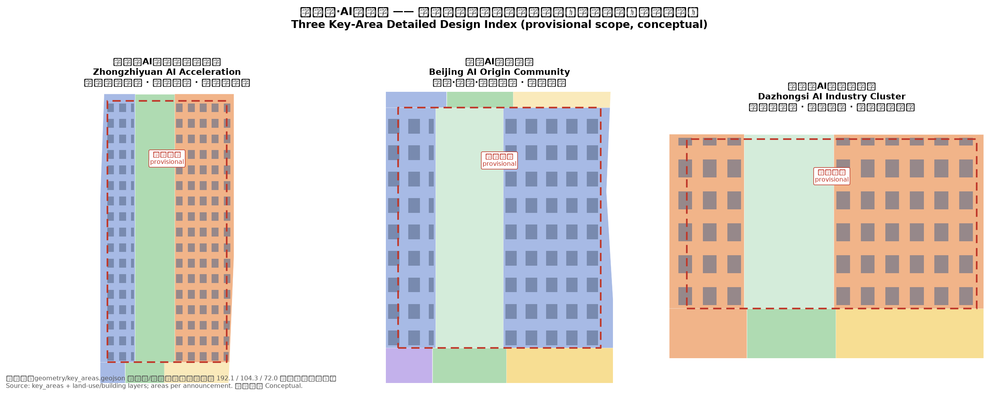

统筹研究范围
43.6 km² · 产业生态与未来城市形态研究：“新京张”命名体系、五大功能、三区两翼协同回路、全球AI生态案例。
- 高校策源—开源协作—企业转化—公共体验—国际传播
- 中关村科技服务翼 × 小月河场景赋能翼
- 文化叙事与Logo方向
New Jing-Zhang AI Innovation Belt — From the Centennial Zigzag Railway to a Human-Centered AI City. 本页为离线电子展示成果；权威数据以 GeoJSON、metrics.json、矩阵文件和自检结果为准。本页把总体概念、三层范围、三处重点区域、用地结构、交通慢行、蓝绿公共空间、AI 场景、朝圣地标、文化叙事、运营体系、核心指标、任务覆盖、自检状态、来源与假设转为人类可读的视觉说明。
以京张铁路『人』字形线路的自主创新精神为原点，塑造『人本AI公共脊』，形成"一脊三芯·四带两翼·多点成网"的空间结构。概念建议，可供专业团队深化研究。

统筹研究范围（43.6km²）→ 总体设计范围（11.4km²）→ 重点区域范围（368.4ha），产业战略、城市更新与片区详细设计逐级落实。
43.6 km² · 产业生态与未来城市形态研究：“新京张”命名体系、五大功能、三区两翼协同回路、全球AI生态案例。
11.4 km² · 控规深度城市设计：“一脊三芯·四带两翼·多点成网”，用地结构、建筑概念体量、交通市政、蓝绿公共空间。
368.4 ha · 规划综合实施方案深度：三处重点片区分别开展“定位+空间结构+建筑更新+交通慢行+公共空间+AI场景+实施风险”详细设计。
三芯：全栈自主创新、AI原点与人才、智能经济。面积按公告值，polygon 为临时范围。

花园型全栈自主创新街区：框架、模型、数据、算力、安全评测、标准治理全链条。
近校型AI原点与人才社区：策源—转化—人才闭环。
城市型智能经济街区：智能体、智能终端、内容消费、数据要素。
每张场景卡均映射到空间图层、指标和合规矩阵，说明服务对象、数据/隐私边界、人工复核与运营主体；所有场景为概念建议。
原点广场 · 面向开发者/高校的成果发布与开源协作
常规场景众智园 · 模型评测、标准工作坊与红队测试展示
产业测试验证一脊沿线 · 初创与居民的算力入口与低碳服务
常规场景京张遗址公园 · 可解释导视与低侵入传感
常规场景大钟寺 · 智能体/终端企业展示、洽谈与国际交流
常规场景众智园清河界面 · 绿色空间、雨洪、骑行与AI展示复合
常规场景原点社区 · 孵化、展示、法务、知识产权与投融资服务
常规场景大钟寺 · 合规、授权、可审计的数据要素城市界面
常规场景社区与商业交汇 · 医疗、教育、法律等AI+生活服务
常规场景小月河东翼 · 智能体交通的脱敏数据仿真与交管评审
产业测试验证众智园 · 标准制定、可信评测与安全治理展示
常规场景一带全境 · 从遗址文化、开源社区到国际路演的体验路线
产业测试验证| 用户画像 | 典型需求 | 空间响应 | 隐私/复核边界 |
|---|---|---|---|
| 开源开发者 | 发布、协作、评测、社区声誉 | 原点广场开源发布厅、公共代码墙 | 不采集个人行为轨迹，仅聚合统计 |
| 初创团队 | 低成本办公、算力入口、产品试验场 | 众智园共享测试场、端侧算力驿站 | 算力与数据服务需另行授权 |
| 头部企业访客 | 展示、商务、国际接待、人才招聘 | 大钟寺国际路演客厅、轨道接驳 | 企业标识与案例须清权 |
| 周边居民 | 通勤、休闲、社区服务、低扰动更新 | 人形公共脊、社区AI服务点 | 居民画像不用于商业推荐 |
| 高校师生 | 成果转化、跨校协作、日常慢行 | 校区-园区缝合、成果转化驿站 | 校园数据与科研成果需授权 |
三个朝圣地标均为概念建议，不宣称已批准建设；导视、Logo、字体、图像与人物/企业标识全部清权。
以『人』字形铁轨为母题的公共空间主轴，融合遗址展示、AI艺术与慢行体验，是百年自主创新的当代朝圣之路。载体：green_space.geojson。
以公钥、代码片段与贡献者名录为装饰语言的荣誉墙与纪念碑，形成开发者“朝圣—打卡—贡献”体系。载体：public_space.geojson。
可交互全链图谱装置，展示“芯片—框架—模型—数据—应用—治理”，成为AI治理全球话语权地标。
三层叙事“铁轨—代码—人本”：百年京张 × 中关村 × AI 新文化；四季活动矩阵与开发者社区运营机制。
铁轨层：清华园车站、京张铁路遗址线（概念）为历史锚点；代码层：中关村“敢于创新、宽容失败”以开源与共创延续；人本层：“人”字形母题承载AI美好生活。
四季活动矩阵：新京张AI创新周（春）· 开源共创节（夏）· AI治理论坛（秋）· 人形节成果发布季（冬）。
一期：大钟寺先行（轻量活动+公共空间）；二期：原点社区与中部走廊；三期：众智园全链建成。全部为概念分期。
compliance_matrix.json 覆盖公告 1.3/1.4/1.5 与 agent.1–agent.6；standard_matrix.json 与 design_depth_matrix.json 证明专业标准和设计深度。所有指标值与本包 metrics.json 一致。
来源见 sources.json、agent_taskbook.json、standards/references 与 data/source_registry.json。本页为离线静态页，不加载 CDN、远程瓦片、外部脚本、外部字体、iframe、表单或 API。
待补官方边界、控规条件、道路红线、权属、市政与文保数据；容积率、建筑高度、法定绿地率为 unknown 状态，待官方控规补齐后复算。